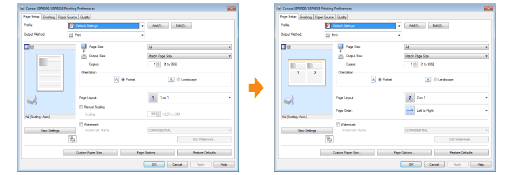

Change the default values for printing preferences which apply to all data.
For example, if you perform layout printing frequently, you do not need to change the settings each time you print by changing the default values for [Page Layout].

You can save frequently used multiple printing preferences as "Profiles." You can perform printing with the registered settings by only selecting the desired "Profile."
Also, some settings that support various jobs are registered as the default "Profiles."